전기공사기사 (2009-08-30 기출문제)
1과목: 전기응용 및 공사재료
1. 계자전류를 일정하게 하고, 전기자에 인가하는 전압을 변화시켜 속도를 제어하는 방법으로 타여자 전동기의 속도제어에 주로 쓰이는 제어는?
- 전압제어
- 저항제어
- 계자제어
- 전류제어
(정답률: 73%)

2. 10[℃]의 물 10[ℓ]를 20[분]간에 96[℃]로 올리려면 전열기 용량[kW]은?
- 0.5
- 1
- 3
- 6
(정답률: 80%)
3. 직선인 선로에서 호륜궤조를 설치하지 않으면 안 되는 곳은?
- 분기개소
- 저속도운전구간
- 병용 궤도
- 교량의 전방
(정답률: 78%)
4. 알카리 축전지의 양극에 쓰이는 것은?
- 납
- 아연
- 구리
- 니켈 산화물
(정답률: 83%)
5. 완전 확산면의 휘도가 1[Stilb]일 때의 광속발산도[rlx]는?
- π
- 104π
- 4π
- 10-4π
(정답률: 68%)
6. 단상 유도 전동기의 기동 방법 중 기동 토크가 가장 큰 것은?
- 반발 기동형
- 콘덴서 기동형
- 세이딩 코일형
- 분상 기동형
(정답률: 91%)
7. 균일한 휘도를 가진 긴 원통(원주) 광원의 축 중앙 수직 방향의 광도가 150[cd]이다. 이 원통 광원의 구면 광도[cd]는 약 얼마인가?
- 117
- 128
- 136
- 147
(정답률: 63%)
8. 1[kW]는 약 몇 [kgㆍm/s]에 해당하는가?
- 550
- 102
- 75
- 50
(정답률: 70%)
9. NPN형 접합 트랜지스터를 사용할 때 컬렉터의 전위를 베이스로 기준하면 무슨 전위가 되는가?
- 영전위
- 동전위
- 정전위
- 부전위
(정답률: 60%)
10. 전지의 국부작용을 방지하는 방법은?
- 완전 밀폐
- 감극제 사용
- 니켈 도금
- 수은 도금
(정답률: 79%)
11. 알칼리 축전지의 공칭용량은?
- 2[Ah]
- 4Ah]
- 5Ah]
- 10Ah]
(정답률: 86%)
12. 다음 중 가정용 전기기계기구인 테이블 탭과 분기소켓에 대한 설명으로 잘못된 것은?
- 15A 분기회로 또는 20A 배선용차단기 분기회로에 한하여 사용할 것
- 분기소켓의 구수는 3구 이하일 것
- 테이블 탭의 코드 길이는 5m 이하일 것
- 테이블 탭의 경우 옥내배선과의 접속은 콘센트로 할 것
(정답률: 72%)
13. 600V 2종 절연전선에 해당하는 기호는?
- DV
- IV
- HIV
- IE
(정답률: 67%)
14. 전기기기 자심재료의 구비조건으로 옳지 않은 것은?
- 보자력 및 잔류 자기가 클 것
- 투자율이 클 것
- 포화 자속밀도가 클 것
- 고유저항이 클 것
(정답률: 85%)
15. 가공전선로에서 22.9kV-Y 특별고압 가공전선 2조를 수평으로 배열하기 위한 완금의 표준길이[mm]는?
- 2400
- 2000
- 1800
- 1400
(정답률: 79%)
16. 접지전극의 재료는 동판, 동봉, 철관, 철봉, 매설지선 등을 쓰고 이를 될수록 물기가 많은 장소에 시설하되 산등으로 인하여 접지전극이 부식할 염려가 없는 지점을 선정하여 시공하여야 한다. 이때 동판의 두께는 최소 몇 mm 이상 이어야 하는가?
- 0.3
- 0.7
- 1
- 2
(정답률: 51%)
17. 금속 덕트 지지점 간이 거리는 몇 m 이하로 하여야 하는가?
- 1
- 2
- 3
- 4
(정답률: 64%)
18. 저압핀 애자의 종류가 아닌 것은?
- 저압 소형핀 애자
- 저압 중형핀 애자
- 저압 대형핀 애자
- 저압 특대형핀 애자
(정답률: 87%)
19. 노출공사에 사용되는 금속관을 조영재에 부착하는 재료는?
- 터미널캡
- 새들
- 하키
- 엔트런스캡
(정답률: 84%)
20. 케이블 트레이공사에 별도의 조치 없이 사용할 수 있는 케이블은?
- VV케이블
- EV케이블
- CV케이블
- 연피케이블
(정답률: 70%)
2과목: 전력공학
21. 파동임피던스 Z1=600Ω인 선로 종단에 파동 임피던스 Z2=1300Ω의 변압기가 접속되어 있다 지금 선로에서 파고 ei=900kV의 전압이 진입되었다면 접촉점에서의 전압 반사파는 약 몇 [kV]인가?
- 192[kV]
- 332[kV]
- 524[kV]
- 988[kV]
(정답률: 12%)
22. 전압 66000V, 주파수 60Hz, 길이 20km, 심선 1선당 작용 정전용량 0.3464μF/km인 3상 지중 전선로의 3상 무부하 충전 전류는 약 몇 [A]인가? (단, 정전 용량이외의 선로정수는 무시한다.)
- 83.6[A]
- 91.5[A]
- 99.5[A]
- 107.5[A]
(정답률: 18%)
23. 가공배전선로에서 부하용량 4000[kVA] 이하의 분기점에 설치하여 후비보호장치인 차단기 또는 리클로우저와 협조하여 고장구간을 자동으로 구분 분리하는 개폐장치는?
- 고장구간 자동 개폐기
- 자동 선로 구분 개폐기
- 자동 부하 전환 개폐기
- 기중부하 개폐기
(정답률: 9%)
24. 초호각(arcing horn)의 역할은?
- 애자의 파손을 방지한다.
- 풍압을 조절한다.
- 송전 효율을 높인다.
- 고주파수의 섬락전압을 높인다.
(정답률: 17%)
25. 다음 중 중성점 비접지방식에서 가장 많이 사용되는 변압기의 결선 방법은?
- △-Y
- △-△
- Y-V
- Y-Y
(정답률: 13%)
26. 다음 중 보호대상과 사용되는 계전기의 연결로 옳지 않은 것은?
- 발전기 배주 단락 검출용-비율차동 계전기
- 발전기 계자보호 및 직류기 기동용-부족전류계전기
- 발전기 부하불평형 회전자 과열소손-역상과전류계전기
- 과부하 단락사고-과전압계전기
(정답률: 15%)
27. 변전소에서 비접지 선로의 접지보호용으로 사용되는 계전기에 영상전류를 공급하는 것은?
- CT
- GPT
- ZCT
- PT
(정답률: 19%)
28. 전선 4개의 도체가 정4각형으로 그림과 같이 배치되어 있을 때 소도체간 기하 평균거리는 약 몇 [m]인가?
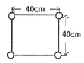
- 0.40[m]
- 0.45[m]
- 0.50[m]
- 0.57[m]
(정답률: 14%)
29. 3상 3선식 1회선 배전 선로의 말단에 역률 0.8(늦음)의 평형 3상 부하가 있다. 변전소 인출구(송전단)전압이 6600V, 부하의 단자전압이 6000V일 때 부하 전력은 몇 [kW]인가? (단, 전선 1가닥당의 저항은 4Ω, 리액턴스는 3Ω이라 하고 기타 선로 정수는 고려하지 않는다.)
- 333[kW]
- 576[kW]
- 998[kW]
- 1728[kW]
(정답률: 11%)
30. 한류 리액터를 사용하는 가장 큰 목적은?
- 충전전류의 제한
- 접지전류의 제한
- 누설전류의 제한
- 단락전류의 제한
(정답률: 15%)
31. 전력계통의 절연협조 계획에서 채택되어야 하는 모선피뢰기와 변압기의 관계에 대한 그래프로 옳은 것은?
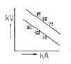
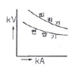
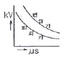
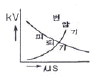
(정답률: 15%)
32. 3상3선식 송전선을 연가 할 경우 일반적으로 몇 의 배수(倍數)의 구간으로 등분하여 연가 하는가?
- 2
- 3
- 5
- 6
(정답률: 13%)
33. 수력발전설비에서 흡출관을 사용하는 목적으로 가장 알맞은 것은?
- 압력을 줄이기 위하여
- 물의 유선을 일정하게 하기 위하여
- 속도변동률을 적게 하기 위하여
- 낙차를 늘리기 위하여
(정답률: 12%)
34. 저압뱅킹 배선방식에서 캐스케이딩(cascading) 현상이란?
- 저압선이나 변압기에 고장이 생기면 자동적으로 고장이 제거되는 현상
- 변압기의 부하배분이 균일하지 못한 현상
- 저압선의 고장에 의하여 건전한 변압기의 일부 또는 전부가 차단되는 현상
- 전압동요가 적은 현상
(정답률: 18%)
35. 증기터빈내에서 팽창 도중에 있는 증기를 일부 추기하여 그것이 갖는 열을 급수가열에 이용하는 열사이클은?
- 랭킨사이클
- 카르노사이클
- 재생사이클
- 재열사이클
(정답률: 6%)
36. 원자로에서 중성자가 원자로 외부로 유출되어 인체에 위험을 주는 것을 방지하고 방열의 효과를 주기 위한 것은?
- 제어재
- 차폐재
- 반사체
- 구조재
(정답률: 15%)
37. 송전선로에서 송수전단 전압 사이의 상차각이 몇[°]일 때 최대 전력으로 송전할 수 있는가?
- 30°
- 45°
- 60°
- 90°
(정답률: 13%)
38. 고압배전선로 구성방식 중에서 수요 분포에 따라 임의의 각 장소에서 분기선을 끌어서 공급하는 방식은?
- 가지식(수지식)
- 환상식
- 망상식
- 뱅킹식
(정답률: 7%)
39. 직류 2선식 대비 전선 1가닥당 송전 전력이 최대가 되는 전송 방식은? (단, 선간전압, 전송전류, 역률 및 전송거리가 같고 중성선은 전력선과 동일한 굵기이며 전선은 같은 재료를 사용하고, 교류 방식에서 cos⍬=1로 한다,)
- 단상 2선식
- 단상 3선식
- 3상 3선식
- 3상 4선식
(정답률: 11%)
40. 탑각의 접지와 관련이다. 접지봉으로써 희망하는 접지저항치까지 줄일 수 없을 때 사용하는 것은?
- 가공지선
- 매설지선
- 크로스본드선
- 차폐선
(정답률: 18%)
3과목: 전기기기
41. 3[kW], 1500[rpm] 유도전동기의 토크는 약 몇 [kgㆍm]인가?
- 5
- 4
- 3
- 2
(정답률: 12%)
42. 수백[Hz]~20000[Hz]정도의 고주파 발전기에 쓰이는 회전자형은?
- 농형
- 유도자형
- 회전전기자형
- 회전계자형
(정답률: 14%)
43. 변압기의 자속에 대하여 맞는 설명은?
- 주파수와 권수에 반비례한다.
- 주파수와 권수에 비례한다.
- 전압에 반비례한다.
- 권수에 비례한다.
(정답률: 11%)
44. 동기 발전기의 권선을 분포권으로 하면?
- 기전력의 고조파가 감소하여 파형이 좋아진다.
- 난조를 방지한다.
- 권선의 리액턴스가 커진다.
- 집중권에 비하여 합성유도 기전력이 높아진다.
(정답률: 13%)
45. 유도 전동기의 2차 효율은? (단, s는 슬립이다.)
- 1/s
- s
- 1-s
- s2
(정답률: 16%)
46. 3상 스텝핑 모터가 120개의 회전자 값을 갖는다면 스텝의 크기는 몇 [°]인가?
- 1.0°
- 2.0°
- 3.0°
- 4.0°
(정답률: 8%)
47. 정전압 계통에 접속된 동기발전기는 그 여자를 약하게 하면?
- 출력을 감소한다.
- 전압이 강하한다.
- 앞선 무효전류가 증가한다.
- 뒤진 무효전류가 증가한다.
(정답률: 13%)
48. 정격전압 6000[V],정격출력 12000[kVA] 매 상당의 동기임피던스가 3[Ω]인 3상 동기방전기의 단락비는?
- 0.8
- 1.0
- 1.2
- 1.5
(정답률: 13%)
49. 자극수6, 파권, 전기자 도체수 400의 직류발전기를 600[rpm]의 회전속도로 운전할 때 유도기전력 120[V]이다. 매극당 자속[Wb]은?
- 0.89
- 0.09
- 0.47
- 0.01
(정답률: 12%)
50. 단상정류자 전동기에서 보상권선과 저항도선의 작용을 설명한 것으로 틀린 것은?
- 저항도선은 변압기 기전력에 의한 단락전류를 적게 한다.
- 변압기 기전력을 크게 한다.
- 역률을 좋게 한다.
- 전기자 반작용을 제거해 준다.
(정답률: 13%)
51. 정격용량 20[kVA], 정격전압 1차 6.3[kV], 2차 210[V], 퍼센트 임피던스 4[%]의 단산변압기가 있다. 2차측이 단락되었을 때 1차 단락 전류는 약 몇 [A]인가?
- 79.3
- 89.3
- 99.3
- 109.3
(정답률: 12%)
52. 변압기의 부하가 증가할 때의 현상으로서 옳지 않은 것은?
- 동손이 증가한다.
- 여자전류는 변함없다.
- 온도가 상승한다.
- 철손이 증가한다.
(정답률: 14%)
53. 직류가 권선법 중에서 주로 사용되는 권선법은?
- 개로권, 단층권, 고상권
- 개로권, 단층권, 환상권
- 폐로권, 이층권, 개로권
- 폐로권, 이층권, 고상권
(정답률: 17%)
54. Y결선한 변압기의 2차측에 다이오드 6개로 3살 전파의 정류회로를 구성하고 저항 R을 걸었을 때의 3상 전파직류전류의 평균치 I[A]는? (단, E는 교류측의 선간전압이다.)
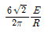
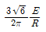
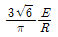
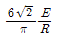
(정답률: 8%)
55. 7.5[kW], 6극, 200[V]용 3상 유도 전동기가 있다. 정격전압으로 기동하면 기동전류는 정격전류의 615[%]이고, 기동 토크는 전부하 토크의 225[%]이다. 지금 기동 토크를 전부하 토크의 1.5배로 하기 위하여 기동전압을 약 얼마로 하면 되는가?
- 133[V]
- 143[V]
- 153[V]
- 163[V]
(정답률: 9%)
56. 3상 유도전동기 원선도이다. 역률[%]은 얼마인가?
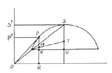
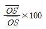
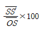
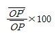
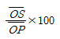
(정답률: 16%)
57. 동기발전기의 병렬운전 조건에서 같지 않아도 되는 것은?
- 기전력의 주파수
- 기전력의 용량
- 기전력의 위상
- 기전력의 크기
(정답률: 16%)
58. 분권 발전기의 회전 방향을 반대로 하면 일어나는 현상은?
- 높은 전압이 발생한다.
- 잔류자기가 소멸된다..
- 전압이 유기된다.
- 발전기가 소손된다.
(정답률: 14%)
59. 게이트 조작에 의해 부하전류 이상으로 유지 전류를 높일 수 있고 게이트의 턴 오프가 가능한 사이리스터는?
- SCR
- GTO
- LASCR
- TRIAC
(정답률: 14%)
60. 단권변압기의 고압측 전압을 3300[V], 저압측 전압을 3000[V], 단권변압기의 자기용량을 P[kVA]라 하면 역률 80[%]의 부하에 몇 [kW]의 전력을 공급할 수 있는가?
- 6.6P
- 7.7P
- 8.8P
- 9.9P
(정답률: 12%)
4과목: 회로이론 및 제어공학
61. 저항 R, 커패시턴스 C의 병렬회로에서 전원 주파수가 변할 때의 임피던스 궤적은?
- 제1상한 내의 반직선
- 제1상한 내의 반원
- 제4상한 내의 반원
- 제4상하 내의 반직선
(정답률: 14%)
62. 3상 불평형 전압에서 영상전압이 140[V]이고, 정상전압 600[V], 역상전압이 280 [V]이라면 전압의 불평형률은?
- 2.5
- 0.47
- 0.4
- 0.23
(정답률: 10%)
63. 어느 회로의 유효전력은 300[W], 무효전력은 400[var]이다. 이 회루의 피상전력은 몇 [VA]인가?
- 350[VA]
- 500[VA]
- 600[VA]
- 700[VA]
(정답률: 14%)
64. 선로의 임피던스 Z=R+j⍵L[Ω], 병렬 어드미턴스가 Y=G+j⍵C[℧]일 때 선로의 저항 R과 콘덕턴스 G가 동시에 0이 되었을 때 전파 정수는?
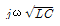
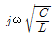
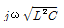
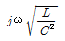
(정답률: 16%)
65. R-L 직렬회로에서 시간 t=0에서 스위치를 닫아 직류전압을 인가했을 때 전류 i가 0에서 정상 전류의 63.2[%]에 달하는 시간[sec]은? (단, L의 초기전류는 0이다.)
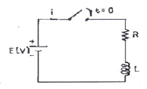
- LR[sec]
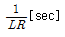
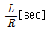
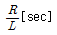
(정답률: 16%)
66. 시간함수 f(t)=1-e-at의 라플라스 변환은?
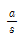
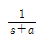
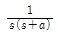
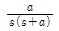
(정답률: 11%)
67. 다음 회로의 a, b단자간 임피던스가 R이 되기 위한 조건은?
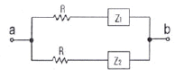
- Z1Z2=R
- Z1Z2=R2
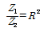
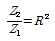
(정답률: 14%)
68. R-C 저역 필터회로의 전달함수 G(j⍵)는? (단, ⍵=0이다.)
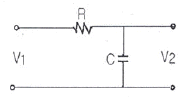
- 0
- 0.5
- 0.717
- 1
(정답률: 11%)
69.
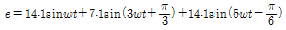
일 때 실효값은 약 몇 [V] 인가?- 10.5[V]
- 15[V]
- 22[V]
- 25.6[V]
(정답률: 13%)
70. 다음과 같은 4단자 회로의 4단자 정수 A, B, C, D에서 C의 값은?
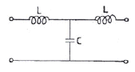
- 1-j⍵C
- 1-⍵2LC
- j⍵L(2-⍵2LC)
- j⍵C
(정답률: 12%)
71. 2차계 과도응답의 특성방정식이 s2+2δ⍵ns+⍵n2=0인 경우 s가 서로 다른 2개의 실근을 가졌을 때의 제동은?
- 과제동
- 부족제동
- 임계제동
- 무제동
(정답률: 15%)
72. 전달함수
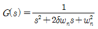
인 제어계에서 ⍵n=2, δ=0일 때 단위 임펄스 입력에 대한 출력은?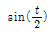
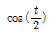
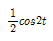
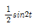
(정답률: 9%)
73. 다음 중 f(t)=e-at의 Z변환은?
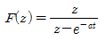
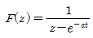
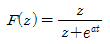
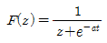
(정답률: 14%)
74. 다음과 같이 주어진 상태 방정식에서 특성방정식의 근은?
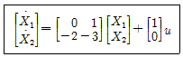
- -1, -2
- -2, -3
- -1, -3
- 1, -3
(정답률: 10%)
75.
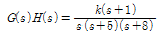
일 때 근궤적에서 점근석의 실수측과의 교차점은?- -6
- -5
- -4
- -1
(정답률: 10%)
76. 다음 제어량 중에서 추종제어와 관계없는 것은?
- 위치
- 방위
- 유량
- 자세
(정답률: 13%)
77. 어떤 제어계의 출력
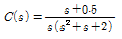
로 주어질 때 정상치는?- 4
- 2
- 0.5
- 0.25
(정답률: 13%)
78. 그림과 같은 계전기 접점회로의 논리식은?
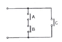
- A+B+C
- (A+B)C
- AB+C
- ABC
(정답률: 14%)
79. 그림과 같은 제어계가 안정되기 위한 K의 범위는?
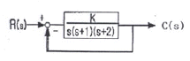
- K<-2
- K>6
- 0<K<6
- K>6, K<0
(정답률: 11%)
80. 그림과 같은 신호 흐름선도에서 C/R은?
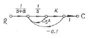
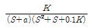
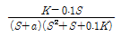
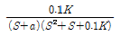
(정답률: 13%)
5과목: 전기설비기술기준 및 판단기준
81. 제1종 접지공사의 접지저항값은 몇 [Ω]이하로 유지하여야 하는가?
- 10
- 20
- 30
- 50
(정답률: 14%)
82. 교류식 전기 철도의 전압 불평형은 변전소의 수전점에서 얼마 이하로 유지하여야 하는가?
- 2%
- 3%
- 4%
- 5%
(정답률: 16%)
83. 차량, 기타 중량물의 압력을 받을 우려가 없는 장소에 지중 전선을 직접 매설식에 의하여 매설하는 경우에는 매설 깊이를 몇 [cm] 이상으로 하여야 하는가?
- 40
- 60
- 80
- 100
(정답률: 16%)
84. 병원, 진료소 등의 진찰, 검사, 치료 또는 감시 등의 의료행위를 하는 의료실내에 시설하는 의료기기의 금속제 외함에 보호접지를 하는 경우 그 접지저항 값은 몇 [Ω]이하로 하여야 하는가? (단, 등전위 접지는 고려하지 않은 경우이다.)
- 5
- 10
- 30
- 50
(정답률: 13%)
85. 정격 전류가 15[A]이하인 과전류 차단기로 보호되는 저압 옥내 전로에 접속하는 콘센트는 정격 전류가 몇 [A] 이하인 것을 시설하는가?
- 15
- 20
- 25
- 30
(정답률: 14%)
86. 전기욕기에 전기를 공급하기 위한 장치로서 내장되어 있는 전원변압기의 2차측 전로의 사용전압은 몇 [V]이하 이어야 하는가?
- 10
- 20
- 30
- 60
(정답률: 8%)
87. 가공 전선로에 사용하는 지지물의 강도 계산에 적용하는 병종풍압하중은 갑종풍압하중의 몇 [%]를 기초로 하여 계산한 것인가?
- 30
- 50
- 80
- 110
(정답률: 15%)
88. 고압 가공인입선의 높이는 그 아래에 위험표시를 하였을 경우에 지표상 몇 [m] 까지로 감할 수 있는가?
- 2.5
- 3
- 3.5
- 4
(정답률: 15%)
89. 교통에 지장을 줄 우려가 없는 도로 위에 시설하는 경우, 가공 통신선의 지표상 최저 높이[m]는?
- 4.0
- 4.5
- 5.0
- 5.5
(정답률: 6%)
90. 옥내에 시설하는 저압 전선에 나전선을 사용할 수 있는 경우는?
- 버스 덕트 공사에 의하여 시설하는 경우
- 합성 수지관 공사에 의하여 시설하는 경우
- 급속 덕트 공사에 의하여 시설하는 경우
- 후강 전선관 공사에 의하여 시설하는 경우
(정답률: 13%)
91. 다음 중 옥주, A종 철주 및 A종 철근 콘크리트주 지지물을 사용할 수 없는 보안공사는?
- 고압 보안공사
- 제1종 특별고압 보안공사
- 제2종 특별고압 보안공사
- 제3종 특별고압 보안공사
(정답률: 13%)
92. 전기온상용 발열선은 그 온도가 몇 [℃] 를 넘지 않도록 시설하여야 하는가?
- 50
- 60
- 80
- 100
(정답률: 14%)
93. 특별고압 가공전선이 도로ㆍ횡단보도교ㆍ철도 또는 궤도와 제1차 접근 상태로 시설되는 경우에 시행하는 보안공사는?
- 제1종 특별고압 보안공사
- 제2종 특별고압 보안공사
- 제3종 특별고압 보안공사
- 제4종 특별고압 보안공사
(정답률: 10%)
94. 사용전압이 35000V 이하이고, 케이블을 사용하는 특별 고압 가공인입선이 도로, 횡단보도교 등을 횡단하지 않으면 지표상 몇 [m] 까지 시설할 수 있는가?
- 3
- 4
- 5
- 6
(정답률: 3%)
95. 154kV 가공송전선이 66kV 가공공전선의 위쪽에 교차되어 시설되는 경우, 154kV 가공송전선로는 제 몇 종 특별고압보안공사에 의하여야 하는가?
- 1종
- 2종
- 3종
- 4종
(정답률: 7%)
96. 저압전로에서 당해 전로에 지락이 생긴 경우 0.5초 이내에 자동적으로 전로를 차단하는 장치를 하였다. 이 때 제 3종 접지공사의 접지 저항 값은 자동차단기의 정격 감도전류가 30[mA] 일 때 최대 얼마로 할 수 있는가?
- 100[Ω]
- 150[Ω]
- 300[Ω]
- 500[Ω]
(정답률: 11%)
97. 특별고압의 기준으로 옳은 것은?
- 3000V를 넘는 것
- 5000V를 넘는 것
- 7000V를 넘는 것
- 10000V를 넘는 것
(정답률: 15%)
98. 공사현장 등에 사용하는 기반형의 용접 전극을 사용하는 아크 용접장치의 용접변압기의 1차측 전로의 대지전압은 몇 [V] 이하이어야 하는가?
- 150
- 220
- 300
- 480
(정답률: 17%)
99. 사용전압이 175000V인 변전소의 울타리ㆍ담 등의 높이와 울타리ㆍ담 등으로부터 충전부분까지 거리의 합계는 몇 [m] 이상으로 하여야 하는가?
- 3.12
- 4.24
- 5.12
- 6.24
(정답률: 12%)
100. 동일 지지물에 저압가공전선(다중접지된 중성선은 제외)과 고압가공전선을 시설하는 경우 저압 가공전선은?
- 고압 가공전선의 위로 하고 동일 완금류에 시설
- 고압 가공전선과 나란하게 하고 동일 완금류에 시설
- 고압 가공전선의 아래로 하고 별개의 완금류에 시설
- 고압 가공전선과 나란하게 하고 별개의 완금류에 시설
(정답률: 14%)